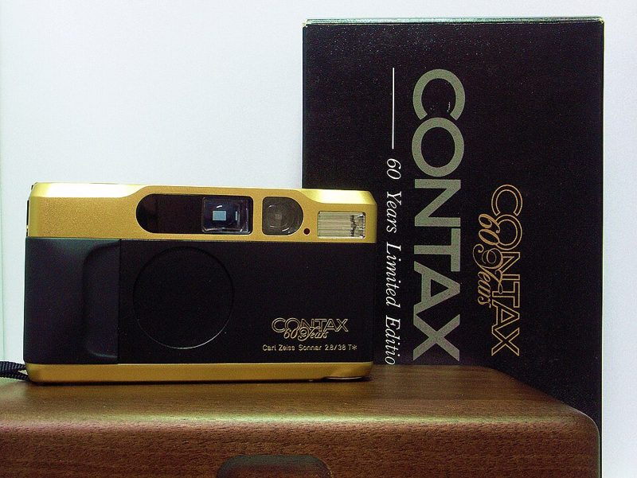

36 EXP. / 카메라 / 자동 똑딱이 / Contax T2
Contax T2 콘탁스 T2
칼 자이스 조나 38mm 렌즈를 단 티타늄 고급 똑딱이. 가격이 크게 올라 지금은 "구하기 어려운 명기"가 되었습니다.

주요 사양
- 출시
- 1991년
- 렌즈
- Carl Zeiss Sonnar T* 38mm f/2.8, 4군 5매
- 노출
- 조리개 우선 프로그램 자동, 보정 ±2EV
- 초점
- 자동 초점 + 수동 거리 선택(0.7m~무한대)
- 셔터
- 1초~1/500초
- 배터리
- CR123A 3V
- 무게
- 295g (배터리 제외)
좋은 점
- 자이스 렌즈의 선명함과 색
- 조리개를 직접 정할 수 있는 고급 똑딱이
- 티타늄 바디의 만듦새
아쉬운 점
- 가격이 매우 높음(정비품 약 2,000달러)
- 최고 셔터 1/500초라 밝은 날 조리개 개방이 어려움
- 고장 시 부품 수급이 어려워 수리비가 큼
중고로 살 때 확인할 것
- 어두운 곳·가까운 거리에서 자동 초점이 헤매지 않는지
- 배터리가 비정상적으로 빨리 닳지 않는지
- 필름 도어 주변 빛샘
- 정비(CLA) 이력 — 비용이 400~500달러 수준이라 이력 유무가 가격 차이를 만듦
자동 똑딱이 전반의 점검 방법과 결함 사진은 자동 똑딱이 가이드에 있습니다.
시세 참고 (해외 판매가, 2026년 10월 확인)
| 판매처 | 가격 | 비고 |
|---|---|---|
| Brooklyn Film Camera (미국) 정비품 기준 | 약 $2,000 |